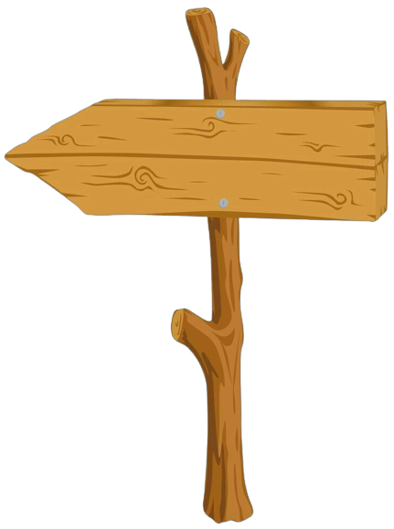

Kura-Kura
Kura-kura adalah hewan reptil bertubuh berbentuk kerucut dengan cangkang keras yang melindungi tubuh mereka. Mereka memiliki empat kaki pendek yang dilengkapi dengan kuku untuk bergerak di darat atau berenang di air. Kura-kura juga memiliki leher dan kepala yang dapat ditarik ke dalam cangkang mereka untuk perlindungan. Makanan utama kura-kura adalah tumbuhan, seperti rumput, daun, dan buah-buahan. Mereka dikenal sebagai hewan yang hidup lama dan biasanya hidup di air tawar atau darat, menjadikannya hewan yang menarik untuk dipelihara sebagai hewan peliharaan.
